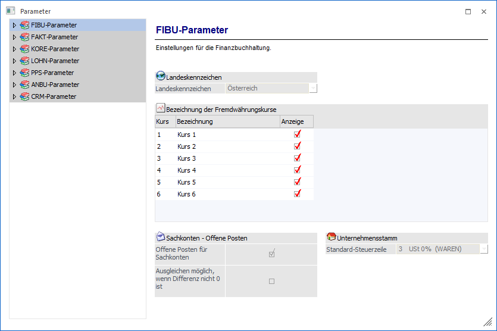

1 WinLine START
1 Parameter
1 Applikations-Parameter
können die Hauptparameter aller WinLine Applikationen definiert werden.
Hinweis
Standardmäßig wird das Fenster in einem "Lesemodus" geöffnet, d.h. es können die bestehenden Einstellungen kontrolliert, Änderungen allerdings nicht durchgeführt werden. Hierfür muss zunächst mit Hilfe des Buttons "Bearbeiten" der "Bearbeitungsmodus" aktiviert werden. Alternativ kann diese Aktivierung auch über das Kontextmenü der rechten Maustaste (Funktion "Applikation xxx bearbeiten") erfolgen.
Achtung
Der Menüpunkt "Applikations-Parameter" kann nur von Benutzern geöffnet werden, welche ein Voll- bzw. Datenadministratoren-Recht besitzen.

In den Parametern erfolgt die Navigation mit Hilfe einer Ordnerstruktur, welche sich im linken Bereich des Fensters befindet. Diese ist in folgende Punkte untergliedert, welche in den nachfolgenden Kapiteln beschrieben werden:
Buttons
Ø Ok
Durch Anklicken des Buttons "Ok" bzw. der Taste F5 werden alle vorgenommenen Einstellungen gespeichert.
Ø Ende
Wenn das Parameter-Fenster nur geöffnet wurde, ohne Aktivierung des Bearbeitungsmodus, dann wird durch Anwahl des Buttons "Ende" bzw. der Taste ESC das Fenster ohne weitere Rückmeldung geschlossen.
Wurde der Bearbeitungsmodus hingegen aktiviert und anschließend der Button "Ende" angewählt, dann wird gefragt, ob die Änderungen gespeichert werden sollen oder nicht.
Ø Bearbeiten
Wenn der Button "Bearbeiten" angewählt wird öffnet sich das Fenster "Auswahl Parameter". Über dieses kann der Bearbeitungsmodus für ausgewählte Applikationen aktiviert werden.